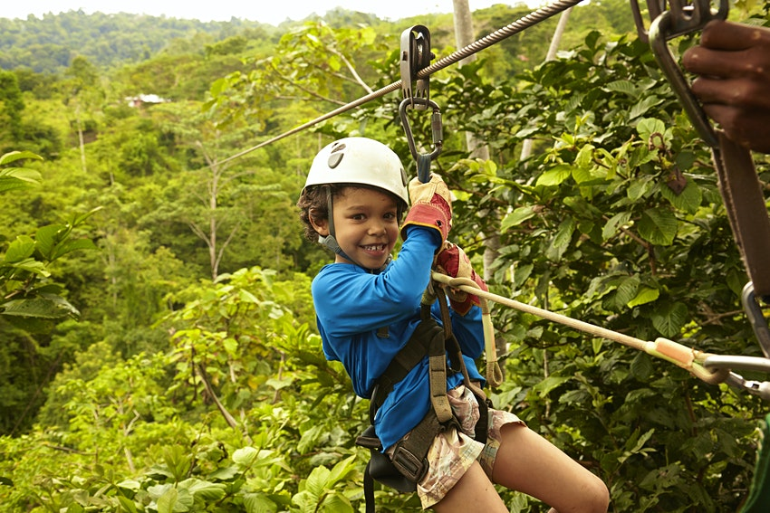

Best things to do with kids in Costa Rica
MARA VORHEES|Lonely Planet Writer|ABOUT 1 HOUR AGO
Costa Rica is the dream destination for fans of adventure travel –
rainforests teaming with wildlife that you can wave to from a zipline, white-water rafting, volcanoes nestled in national parks –
it all awaits you in this little dynamo of a country.
It's fair to wonder if all this action and adventure is suitable for little legs that tire easily, but you can rest assured that Costa Rica is incredibly child friendly and will spark a love of the outdoors for kids of every age.
Is Costa Rica good for kids?
The perfect place for family travel, Costa Rica is a safe, exhilarating tropical playground that will make a huge impression on younger travelers. The country’s myriad adventure possibilities cover the spectrum of age-appropriate intensity levels – and for no intensity at all, some kids might like the idea of getting their hair braided and beaded by a beachside stylist in Puerto Viejo de Talamanca. Whatever you do, the warm culture is extremely welcoming of little ones.

In addition to amazing the kids, this small, peaceful country has all the practicalities that rank highly with parents, such as great country-wide transportation infrastructure, a low crime rate and an excellent health-care system. However, if you plan to rent a car, bring your own infant car seat to avoid disappointment. Even if the rental agency has one available, they're often not in a good state of repair. Children's menus aren't common in restaurants and it may be wise to book accommodation with kitchen facilities if you have picky eaters.